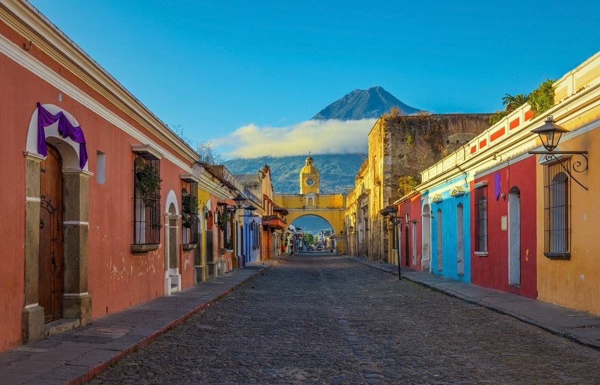

Guatemala
Guatemala, el corazón del mundo maya, es un país de contrastes donde se mezcla la historia precolombina con la modernidad. Sus impresionantes volcanes, lagos cristalinos y bosques nubosos ofrecen una experiencia única a los visitantes. Antigua Guatemala, una ciudad colonial con calles empedradas y edificios históricos, es uno de los destinos más populares. Además, el Lago de Atitlán, rodeado por montañas y pueblos indígenas, es considerado uno de los lagos más bellos del mundo.
Más sobre Guatemala